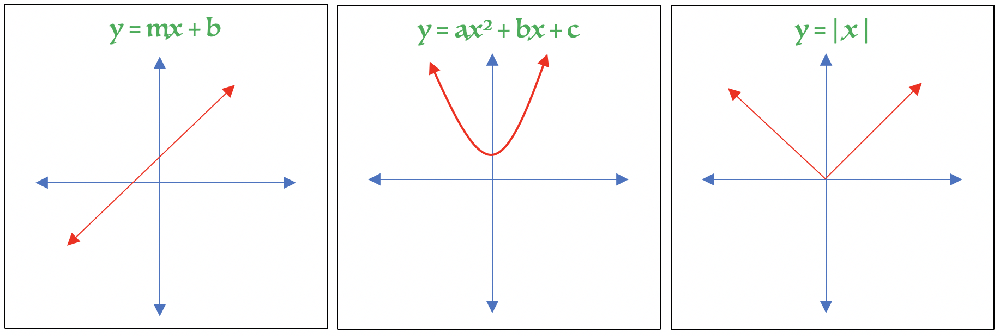
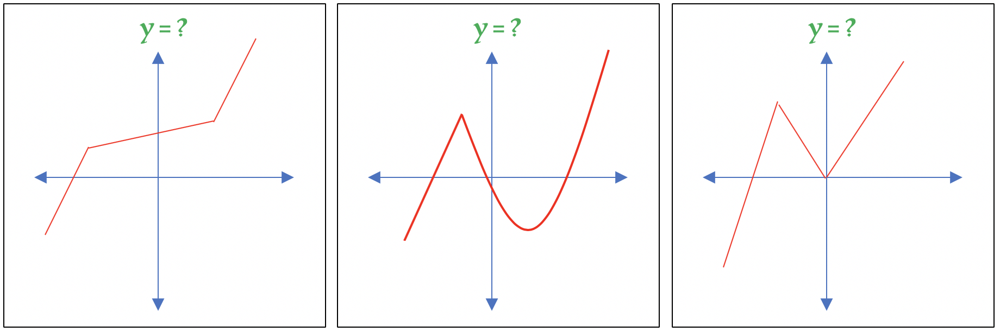
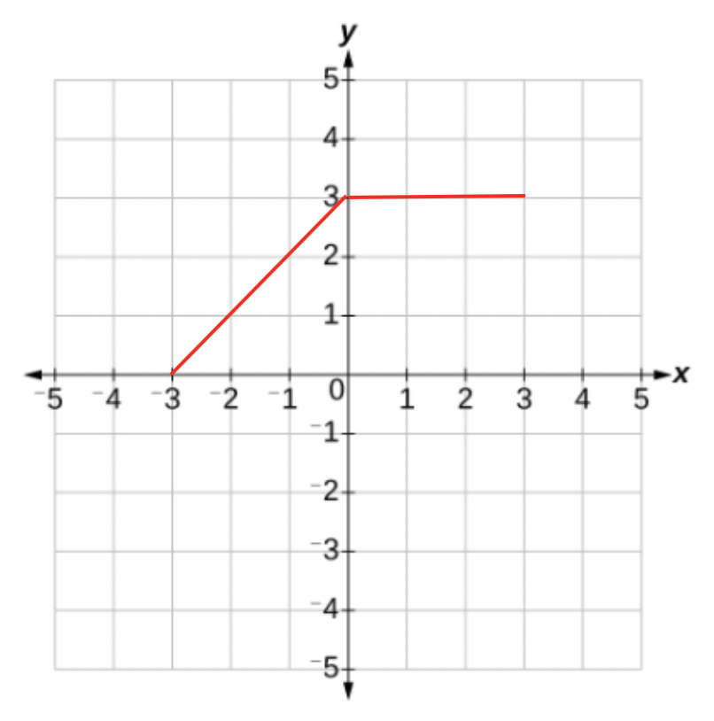
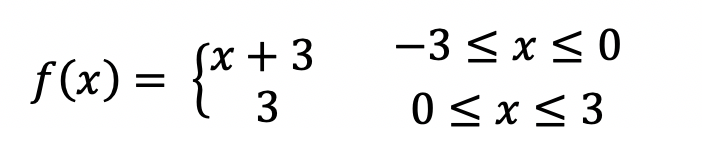
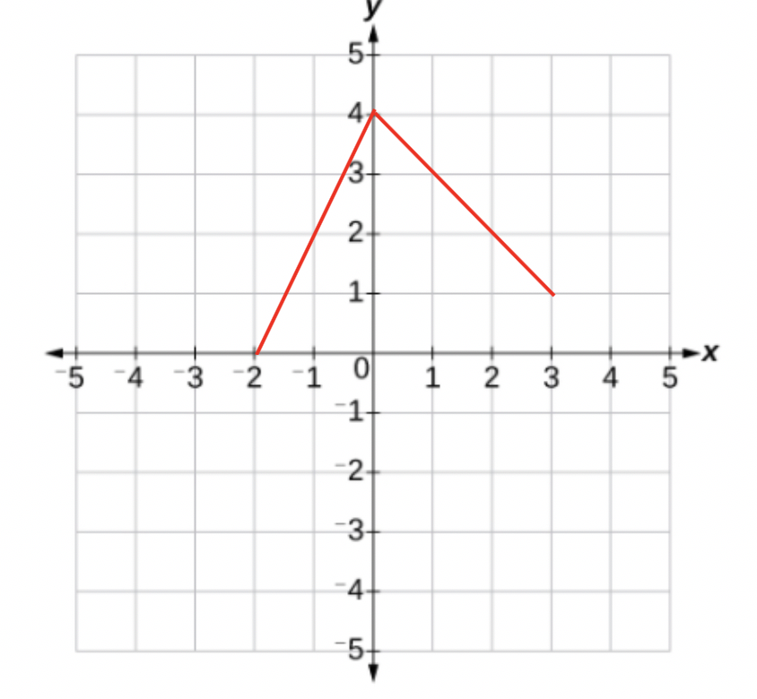
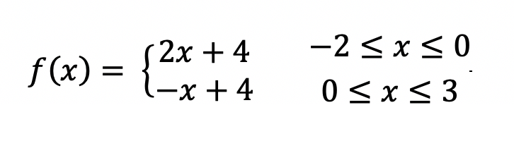
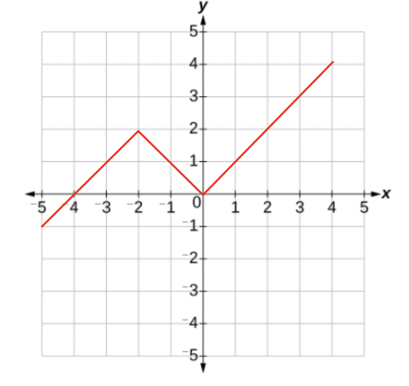
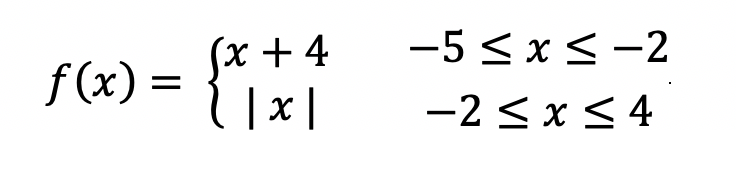

When graphing functions, there are several functions you should already be familiar with:
1. y = mx + b
2. y = ax2 + bx + c
3. y = |x|
just to name a few.
The graphs of each function are shown below:

Sometimes graphs don't fit into the three categories above due to their shape. These graphs are called piecewise functions. Their "pieces" can be described using equations, but not the entire graph.
For example:

So how do we find an equation of these graphs?
This is where the concept of piecewise functions come from. We can use our equations to define certain pieces of the graphs, but no one function can be used to define the whole graph itself. This is why it's important to memorize the three equations and graph shapes shown at the top of the page. When graphing piecewise functions it is allowable to write an equation of the graph using multiple equations per graph.
The pieces of the graphs occur between certain x-coordinates. We use this information to describe the graph along with each pieces' equation.
If the piece of the graph occurs:
between the x-coordinates 0 and 5, we write 0 ≤ x ≤ 5
between the x-coordinates of -2 and 3, we write -2 ≤ x ≤ 3
between the x-coordinates of 4 and 7, we write 4 ≤ x ≤ 7
between the x-coordinates of 5 and 9, we write 5 ≤ x ≤9
and so on.
If the graph is a straight line, we will use y = mx + b
If the graph is a curve, we will use y = ax2 + bx + c
If the graph has a V-shape, we will use y = | x |
Let's look at an example:

There are 2 pieces to our graph so we will need to write two equations to describe it. Since both pieces are straight we will use y = mx + b to describe them. We also need to state the x-coordinates that the graph's pieces lie between along with each equation.
First, let's state the 2 pieces' x-coordinates:
1. The first piece of the graph occurs between x = -3 and x = 0.
We write this as: -3 ≤ x ≤ 0
2. The second piece of the graph occurs between x = 0 and x = 3.
We write this as: 0 ≤ x ≤ 3
1. The first piece of the graph has an y-intercept of 3 and a slope of 1.
The equation y = mx + b becomes y = x + 3.
2. The second piece of the graph has a y-intercept of 3 and a slope of 0.
The equation y = mx + b becomes y = 0x + 3, or just y = 3.
So how do we write our answer?
Piece one: equation y = x + 3 between the x-coordinates -3 ≤ x ≤0
Piece two: equation y = 3 between the x-coordinates 0 ≤ x ≤ 3

Notice y = was rewritten in function notation f(x). The equation above is our answer.
Example 2:

The first piece of the graph occurs between the x-coordinates of -2 and 0.
We write this as -2 ≤ x ≤ 0.
The second piece of the graph occurs between the x-coordinates of 0 and 3.
We write this as 0 ≤ x ≤ 3.
The first piece has a slope of 2 and a y-intercept of 4.
The equation is y = 2x + 4.
The second piece has a slope of -1 and a y-intercept of 4.
The equation is y = -x + 4.
The final answer is:

Example 3:

The first piece of the graph occurs between the x-coordinates of x = -5 and x = -2.
We write this as -5 ≤ x ≤ -2.
The second piece of the graph occurs between x = -2 and x = 4.
We write this as -2 ≤ x ≤ 4.
The first piece of the graph has a slope of 1 and a y-intercept of 4.
The equation is y = x + 4.
The second piece of the graph has an equation of y = | x |.
The final answer is: 